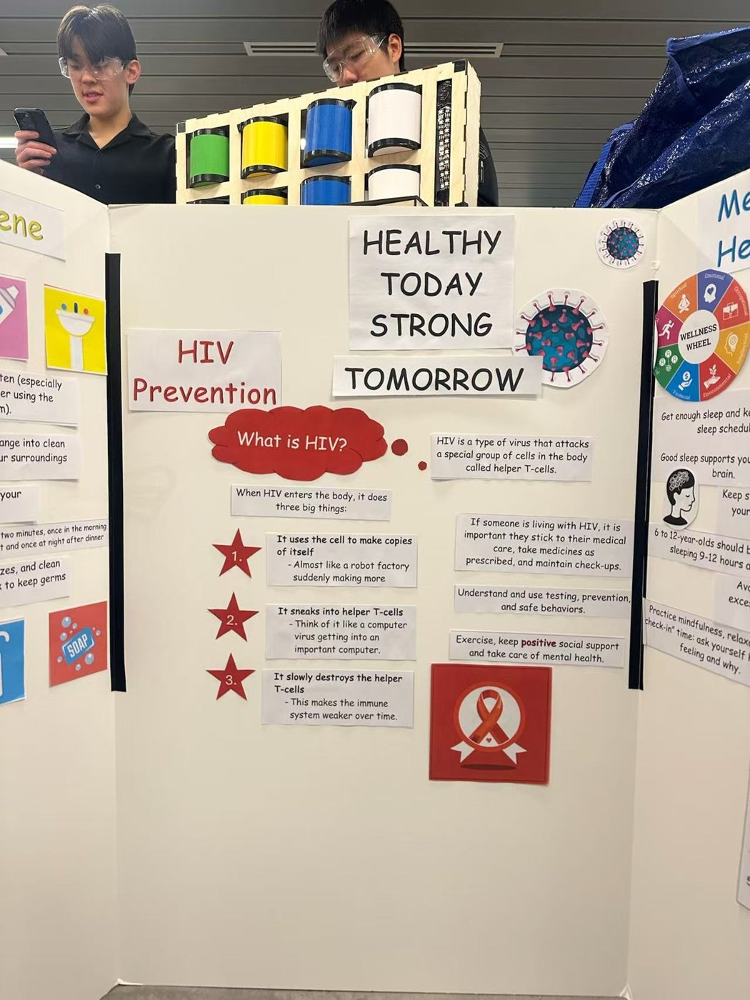
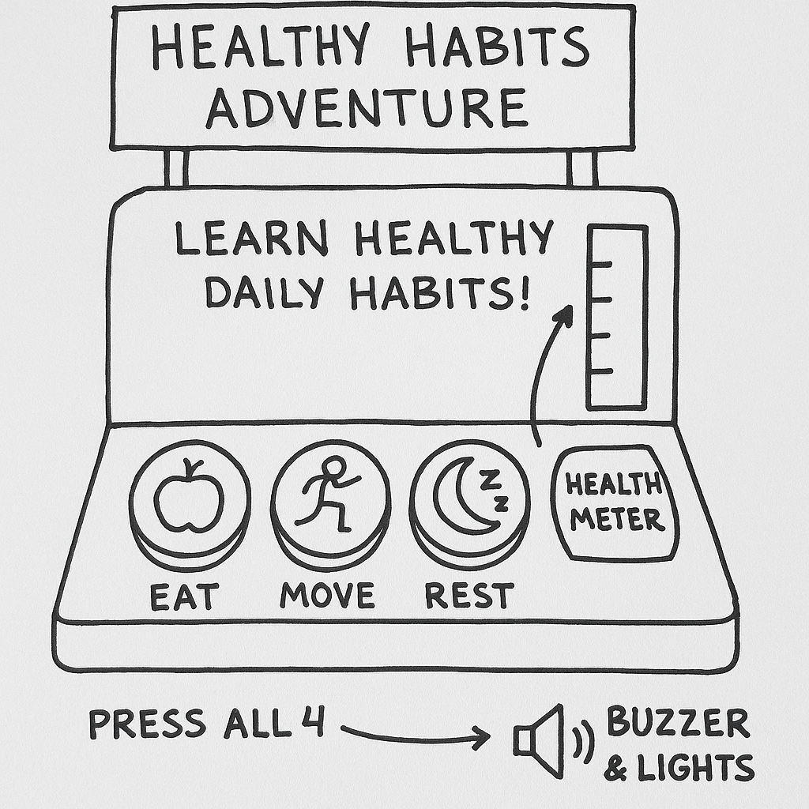
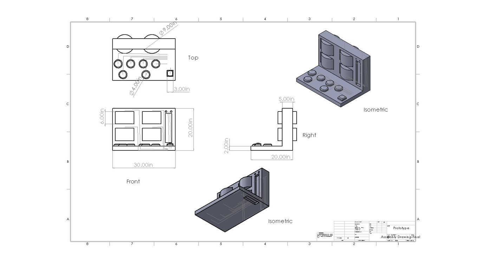
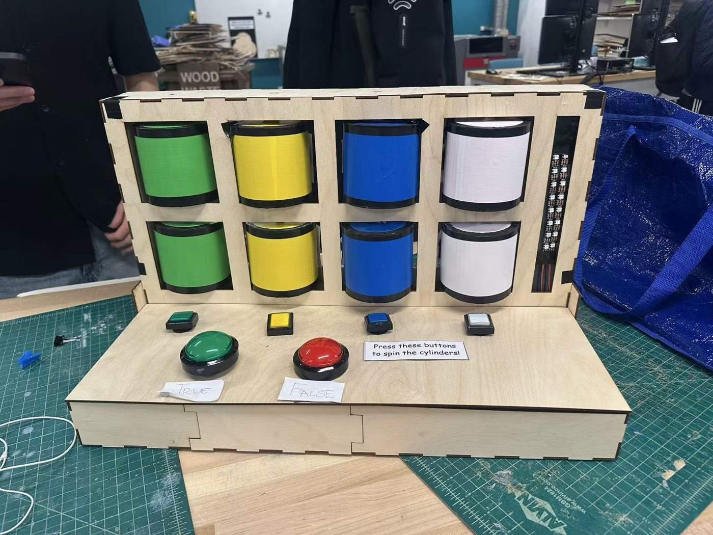
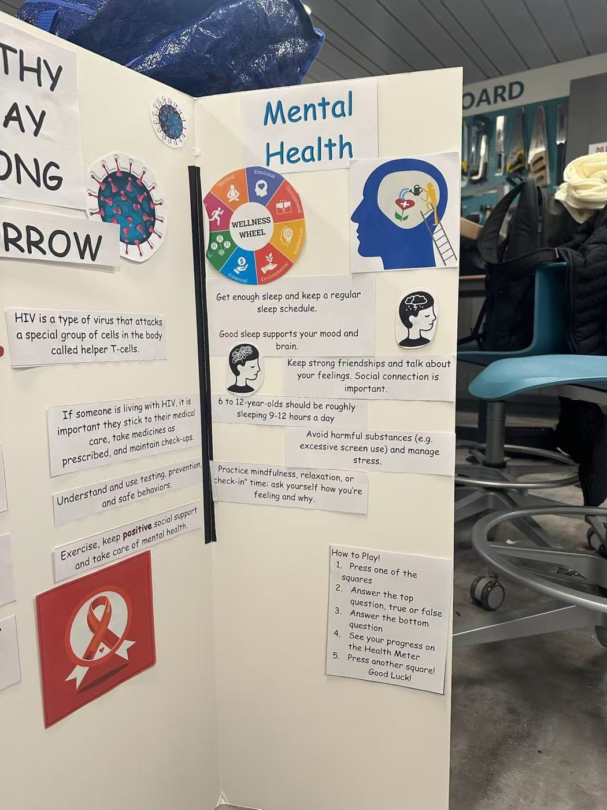

Overview项目概述
A portable, electronics-driven museum exhibit that teaches children (ages 7–11) about health and well-being through interactive play. Built on a Raspberry Pi Pico in MicroPython, it uses servo-rotated 3D-printed question cylinders, arcade-style True/False buttons, and a NeoPixel “Health Meter” for instant feedback.一个便携、由电子驱动的博物馆展品，通过动手互动向儿童（7–11 岁）普及健康与福祉知识。它以 Raspberry Pi Pico（MicroPython）为核心，使用舵机转动的 3D 打印问题圆柱体、街机风格的正确/错误按钮，以及一条 NeoPixel“健康仪表”提供即时反馈。
Watch the Infomercial观看宣传片
Our team infomercial introducing the Healthy Habit Adventure exhibit.我们团队介绍“健康习惯大冒险”展品的宣传片。
The Challenge项目挑战
In October 2025 our four-person team (“Green Eggs and West Ham”) was tasked, under a simulated United Nations brief, with designing a traveling museum exhibit to teach children about Good Health and Well-being (UN SDG 3). The exhibit had to work in low-resource settings — no reliable electricity, internet, or trained staff — while staying engaging, durable, portable, and culturally adaptable.2025 年 10 月，我们四人团队（“Green Eggs and West Ham”）在一个模拟的联合国任务背景下，受命设计一个可巡回展出的博物馆展品，向儿童（7–11 岁）普及“良好健康与福祉”（联合国可持续发展目标 SDG 3）。展品必须能在资源匮乏的环境中运行——没有稳定的电力、网络或专业人员——同时保持趣味性、耐用、便携且具有文化适应性。
The Solution解决方案
We built the “Healthy Habit Adventure”: a laser-cut wooden console that turns a health quiz into a hands-on game. Players pick one of four health categories (hygiene, mental health, HIV prevention, healthy living), a 3D-printed cylinder rotates to reveal a question, and they answer with large green “True” / red “False” arcade buttons. A NeoPixel LED “Health Meter” lights green or red for each answer and runs a rainbow celebration once every category is complete.我们打造了“健康习惯大冒险”：一个激光切割木质操作台，把健康知识问答变成动手游戏。玩家从四个健康主题（卫生、心理健康、艾滋病预防、健康生活）中选择一个，一个 3D 打印的圆柱体随即转动并显示问题，玩家用绿色“正确”/红色“错误”的大号街机按钮作答。前方的 NeoPixel LED“健康仪表”会针对每次作答亮起绿灯或红灯，并在完成全部主题后播放彩虹庆祝动画。
How It Works工作原理
The electronics are driven by a single Raspberry Pi Pico programmed in MicroPython as a state machine:全部电子部分由一块 Raspberry Pi Pico 以 MicroPython 编写的状态机驱动：
- Four 180° positional micro-servos on PWM pins rotate the 3D-printed cylinders to reveal and hide questions.四个 180° 定位舵机通过 PWM 引脚转动 3D 打印圆柱体，以显示或隐藏问题。
- Six arcade buttons (four category selectors + True/False) use the Pico’s internal pull-down resistors and software debouncing for stable input.六个街机按钮（四个主题选择键 + 正确/错误键）使用 Pico 内部下拉电阻并配合软件去抖，确保输入稳定。
- An 8-LED NeoPixel strip acts as the “Health Meter,” giving instant green/red feedback and a rainbow victory animation.8 颗 NeoPixel LED 灯带充当“健康仪表”，即时给出绿/红反馈，并在通关时播放彩虹动画。
- Answers are checked against an in-code answer table; completed columns are locked out, and a battery pack makes the whole exhibit grid-independent and portable.作答与程序内置的答案表比对；已完成的列会被锁定，整套展品由电池组供电，因而不依赖电网、便于携带。
My Role我的职责
I proposed the concept that the team selected — Design #1 scored highest on our weighted decision matrix — and contributed across design, fabrication, and content:团队最终选用的方案正是我提出的——在我们的加权决策矩阵中，方案 #1 得分最高——我在设计、制造与内容三方面都有贡献：
- Designed the 3D-printed question cylinders in SolidWorks (hollow, dowel-through, 0.25" shell clearance) and produced the dimensioned assembly drawings.用 SolidWorks 设计了 3D 打印的问题圆柱体（中空、贯穿木销、与外壳留 0.25 英寸间隙），并绘制了带尺寸标注的装配图。
- Fabricated and finished the cylinders — sanding, painting, and vinyl-wrapping — and sourced components (buttons, servos) while troubleshooting defects.制作并完成了圆柱体的打磨、上色与贴膜，采购了按钮、舵机等元件并排查缺陷。
- Curated and wrote the quiz content, creating accessible, inclusive questions on mental health, hygiene, and HIV prevention for a 7–12-year-old audience.策划并撰写了问答内容，针对 7–12 岁受众编写了关于心理健康、卫生与艾滋病预防的通俗、包容的题目。
- Built the informational trifold board and contributed the evaluation analysis and recommendations (e.g., modular cylinders so topics can be swapped without re-manufacturing).制作了信息三折展板，并参与了评估分析与改进建议（例如采用模块化圆柱体，便于在不重新制造的情况下更换主题）。
Results & Reflection成果与反思
User testing at the showcase confirmed the core hypothesis — physical interactivity held children’s attention far better than static displays — and the build came in under budget. Testing also surfaced concrete next steps: clearer on-exhibit instructions, sturdier joints, and more consistent button/servo response. The team navigated a major mid-project hardware pivot when the available 360° servos proved defective, switching to 180° positional servos and redesigning the control logic from continuous spin to a precise 0–180° toggle.展示日的用户测试验证了我们的核心假设——相比静态展示，动手互动更能抓住孩子们的注意力——而且制作成本控制在预算之内。测试也指出了明确的改进方向：更清晰的展品操作说明、更牢固的结构连接，以及更一致的按钮/舵机响应。项目中期，团队还应对了一次重大硬件调整：库存的 360° 舵机存在缺陷，于是改用 180° 定位舵机，并把控制逻辑从持续旋转改写为精确的 0–180° 切换。
Gallery图库
Click any image to enlarge.点击任意图片可放大。




